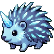

Tap a stage to read its story.
Crystalid is a round pale-blue hedgehog with a single straight ice-horn on its snout and a coat of soft ice-crystal spines that tinkle faintly when it moves. It huddles in granite crevices near Granite Heights' snowline, feeding on mineral-rich frost. When curious, it extends its spines fully in a bright radial fan, looking like a tiny exploding star. It can only roll downhill - Crystalid going uphill has never been documented in the field.
Field note: Every Crystalid spine is a perfect hexagonal crystal prism; they snap off cleanly and regrow in exactly three days.
Granite Heights. Crystalid and its family are found in the Granite Heights. See everyone who lives there.
Share a Bond Food that matches its types to become friends. Crystalid loves:
A Bond Food is not a trick. It joins your spirit with the Kimuro's spirit, and only when it chooses you.
Print the Kimuro adventure packs: mazes, cards, a board game and Bond Mark medals.
See the printable packs